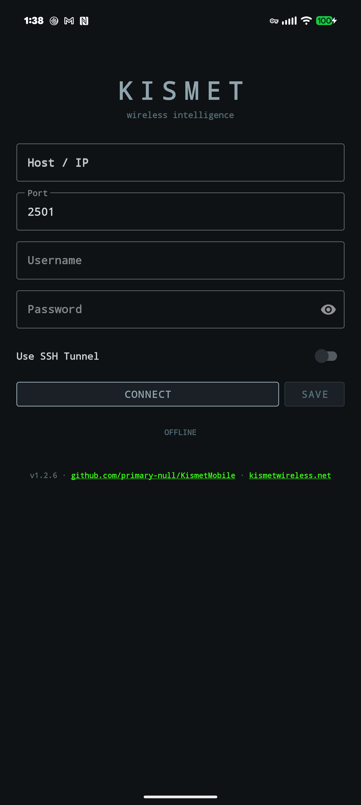
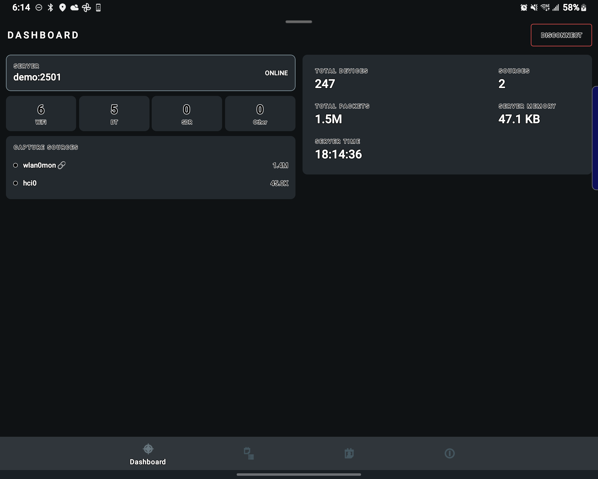
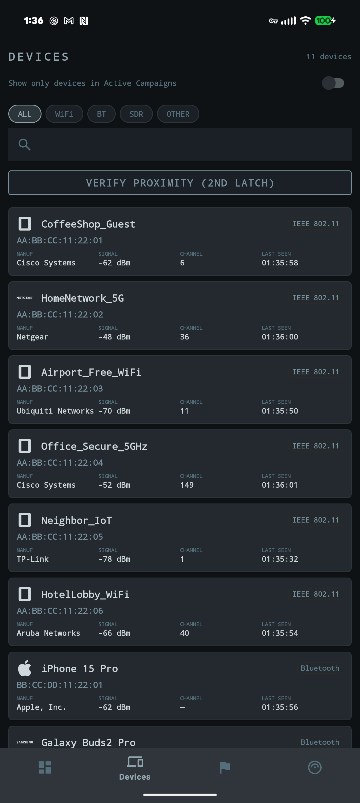
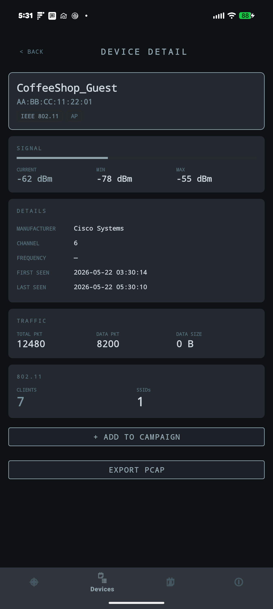
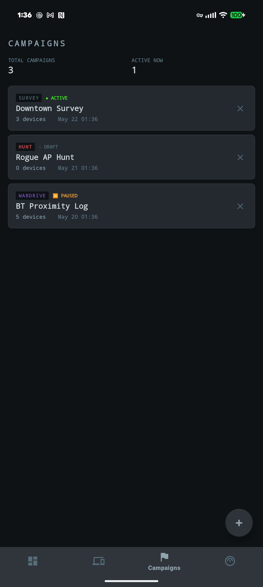
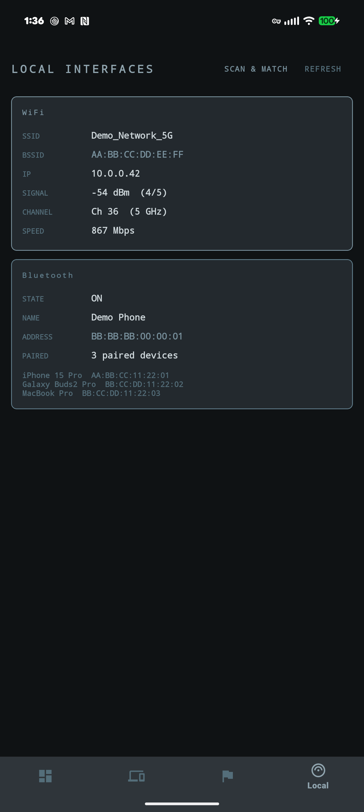
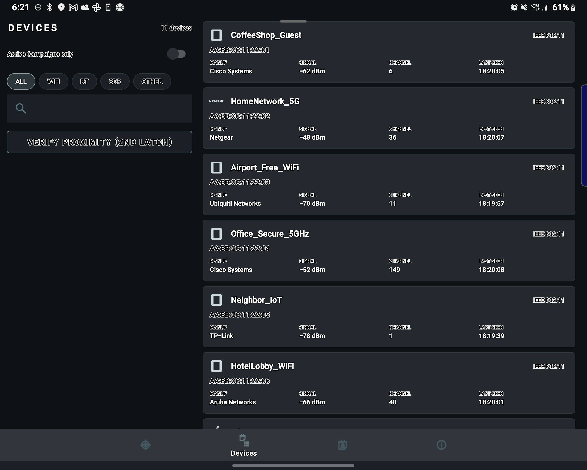
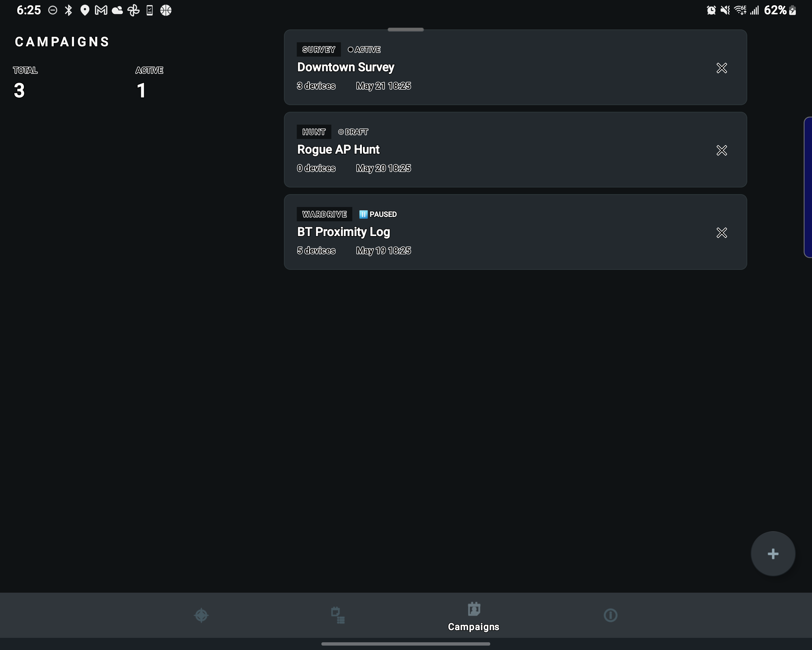
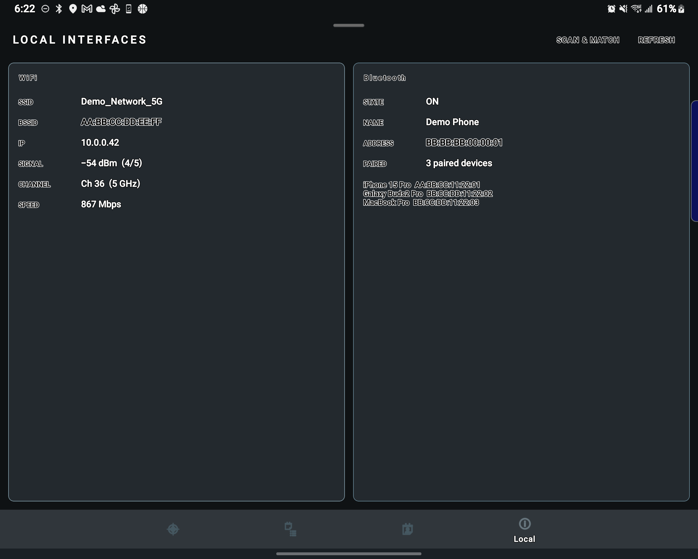

wireless intelligence · android client
A full-featured Android client for the Kismet wireless intrusion detection system. Monitor devices, run proximity checks, stream PCAP, manage campaigns — all from your phone.
Android 10+ · Kotlin · Kismet REST API








10+ (API 29)
Kismet server on port 2501
BLUETOOTH_SCAN runtime (Android 12+)
ACCESS_FINE_LOCATION
WiFi enabled for local scan
The first signed APK release is being prepared for the Releases page; the README explains how to install, verify and update them. To build from source instead (a debug build signed with your own local debug key):
./gradlew :app:assembleStandardDebug
adb install -r app/build/outputs/apk/standard/debug/app-standard-debug.apk